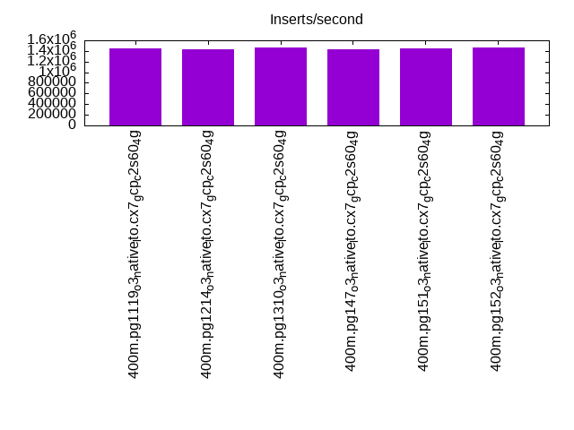
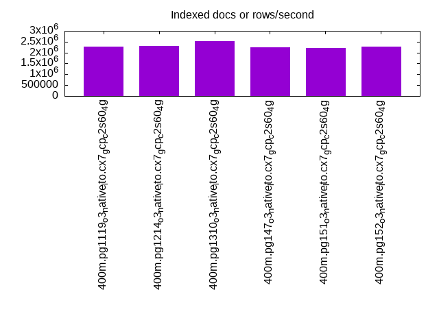
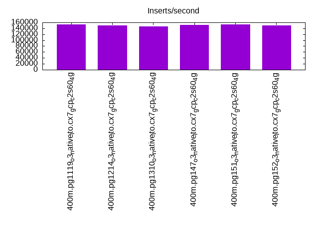
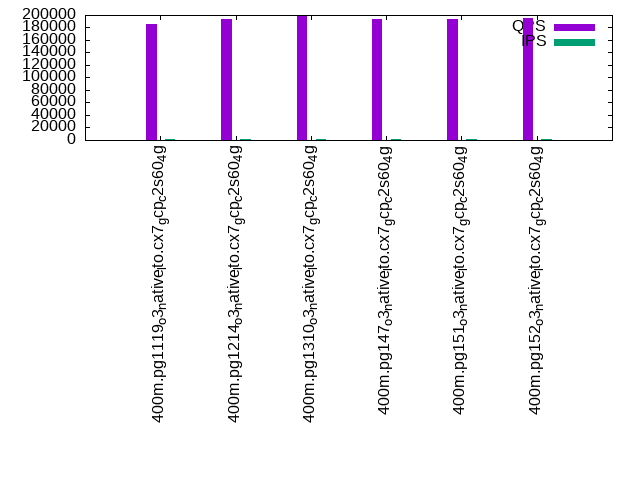
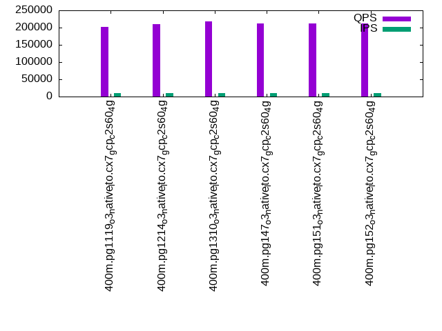
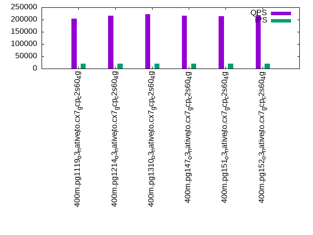

This is a report for the insert benchmark with 400M docs and 20 client(s). It is generated by scripts (bash, awk, sed) and Tufte might not be impressed. An overview of the insert benchmark is here and a short update is here. Below, by DBMS, I mean DBMS+version.config. An example is my8020.c10b40 where my means MySQL, 8020 is version 8.0.20 and c10b40 is the name for the configuration file.
The test server is c2-standard-60 from GCP with 30 cores, hyperthreads disabled, 240G RAM and 3T of NVMe (XFS with RAID0 over 8 devices). The benchmark was run with 20 clients and there were 1 or 2 connections per client (1 for queries, 1 for inserts). It uses 20 tables with a client per table. It loads 20M rows per table without secondary indexes, creates secondary indexes, loads another 20M rows per table then does 3 read+write tests for one hour each that do queries as fast as possible with 100, 500 and then 1000 writes/second/client concurrent with the queries. The database is cached by the OS but not by Postgres. Clients and the DBMS share one server. The per-database configs are in the per-database subdirectories here.
The tested DBMS are:
The numbers are inserts/s for l.i0 and l.i1, indexed docs (or rows) /s for l.x and queries/s for q*.2. The values are the average rate over the entire test for inserts (IPS) and queries (QPS). The range of values for IPS and QPS is split into 3 parts: bottom 25%, middle 50%, top 25%. Values in the bottom 25% have a red background, values in the top 25% have a green background and values in the middle have no color. A gray background is used for values that can be ignored because the DBMS did not sustain the target insert rate. Red backgrounds are not used when the minimum value is within 80% of the max value.
| dbms | l.i0 | l.x | l.i1 | q100.1 | q500.1 | q1000.1 |
|---|---|---|---|---|---|---|
| 400m.pg1119_o3_native_lto.cx7_gcp_c2s60_4g | 1449275 | 2273295 | 152964 | 185303 | 201176 | 204268 |
| 400m.pg1214_o3_native_lto.cx7_gcp_c2s60_4g | 1428571 | 2312717 | 149198 | 194186 | 210675 | 215760 |
| 400m.pg1310_o3_native_lto.cx7_gcp_c2s60_4g | 1465201 | 2516352 | 146897 | 199374 | 217362 | 221057 |
| 400m.pg147_o3_native_lto.cx7_gcp_c2s60_4g | 1428571 | 2247753 | 151114 | 193581 | 211679 | 215660 |
| 400m.pg151_o3_native_lto.cx7_gcp_c2s60_4g | 1454545 | 2198352 | 153315 | 193608 | 211192 | 214804 |
| 400m.pg152_o3_native_lto.cx7_gcp_c2s60_4g | 1459854 | 2260452 | 150489 | 194594 | 212687 | 217247 |
This table has relative throughput, throughput for the DBMS relative to the DBMS in the first line, using the absolute throughput from the previous table.
| dbms | l.i0 | l.x | l.i1 | q100.1 | q500.1 | q1000.1 |
|---|---|---|---|---|---|---|
| 400m.pg1119_o3_native_lto.cx7_gcp_c2s60_4g | 1.00 | 1.00 | 1.00 | 1.00 | 1.00 | 1.00 |
| 400m.pg1214_o3_native_lto.cx7_gcp_c2s60_4g | 0.99 | 1.02 | 0.98 | 1.05 | 1.05 | 1.06 |
| 400m.pg1310_o3_native_lto.cx7_gcp_c2s60_4g | 1.01 | 1.11 | 0.96 | 1.08 | 1.08 | 1.08 |
| 400m.pg147_o3_native_lto.cx7_gcp_c2s60_4g | 0.99 | 0.99 | 0.99 | 1.04 | 1.05 | 1.06 |
| 400m.pg151_o3_native_lto.cx7_gcp_c2s60_4g | 1.00 | 0.97 | 1.00 | 1.04 | 1.05 | 1.05 |
| 400m.pg152_o3_native_lto.cx7_gcp_c2s60_4g | 1.01 | 0.99 | 0.98 | 1.05 | 1.06 | 1.06 |
This lists the average rate of inserts/s for the tests that do inserts concurrent with queries. For such tests the query rate is listed in the table above. The read+write tests are setup so that the insert rate should match the target rate every second. Cells that are not at least 95% of the target have a red background to indicate a failure to satisfy the target.
| dbms | q100.1 | q500.1 | q1000.1 |
|---|---|---|---|
| pg1119_o3_native_lto.cx7_gcp_c2s60_4g | 1977 | 9885 | 19769 |
| pg1214_o3_native_lto.cx7_gcp_c2s60_4g | 1976 | 9885 | 19769 |
| pg1310_o3_native_lto.cx7_gcp_c2s60_4g | 1976 | 9885 | 19769 |
| pg147_o3_native_lto.cx7_gcp_c2s60_4g | 1976 | 9890 | 19769 |
| pg151_o3_native_lto.cx7_gcp_c2s60_4g | 1976 | 9885 | 19769 |
| pg152_o3_native_lto.cx7_gcp_c2s60_4g | 1976 | 9885 | 19769 |
| target | 2000 | 10000 | 20000 |
l.i0: load without secondary indexes. Graphs for performance per 1-second interval are here.
Average throughput:
Insert response time histogram: each cell has the percentage of responses that take <= the time in the header and max is the max response time in seconds. For the max column values in the top 25% of the range have a red background and in the bottom 25% of the range have a green background. The red background is not used when the min value is within 80% of the max value.
| dbms | 256us | 1ms | 4ms | 16ms | 64ms | 256ms | 1s | 4s | 16s | gt | max |
|---|---|---|---|---|---|---|---|---|---|---|---|
| pg1119_o3_native_lto.cx7_gcp_c2s60_4g | 62.982 | 35.987 | 0.960 | 0.038 | 0.029 | 0.004 | 0.535 | ||||
| pg1214_o3_native_lto.cx7_gcp_c2s60_4g | 61.435 | 37.466 | 1.020 | 0.044 | 0.033 | 0.002 | 0.386 | ||||
| pg1310_o3_native_lto.cx7_gcp_c2s60_4g | 63.716 | 35.276 | 0.945 | 0.028 | 0.025 | 0.010 | 0.516 | ||||
| pg147_o3_native_lto.cx7_gcp_c2s60_4g | 61.893 | 37.125 | 0.918 | 0.028 | 0.028 | 0.007 | 0.621 | ||||
| pg151_o3_native_lto.cx7_gcp_c2s60_4g | 62.747 | 36.260 | 0.920 | 0.039 | 0.023 | 0.010 | 0.559 | ||||
| pg152_o3_native_lto.cx7_gcp_c2s60_4g | 62.755 | 36.269 | 0.910 | 0.035 | 0.025 | 0.006 | 0.682 |
Performance metrics for the DBMS listed above. Some are normalized by throughput, others are not. Legend for results is here.
ips qps rps rmbps wps wmbps rpq rkbpq wpi wkbpi csps cpups cspq cpupq dbgb1 dbgb2 rss maxop p50 p99 tag 1449275 0 0 0.0 10238.0 591.5 0.000 0.000 0.007 0.418 236176 60.6 0.163 13 38.3 103.2 NA 0.535 81110 31865 400m.pg1119_o3_native_lto.cx7_gcp_c2s60_4g 1428571 0 0 0.0 11173.6 595.5 0.000 0.000 0.008 0.427 237209 60.5 0.166 13 38.3 103.2 NA 0.386 78713 27069 400m.pg1214_o3_native_lto.cx7_gcp_c2s60_4g 1465201 0 0 0.0 10376.0 609.5 0.000 0.000 0.007 0.426 225384 60.1 0.154 12 38.3 103.2 NA 0.516 83408 21676 400m.pg1310_o3_native_lto.cx7_gcp_c2s60_4g 1428571 0 0 0.0 10099.1 593.4 0.000 0.000 0.007 0.425 224993 59.6 0.157 13 38.3 103.2 NA 0.621 81411 24773 400m.pg147_o3_native_lto.cx7_gcp_c2s60_4g 1454545 0 0 0.0 10210.5 603.1 0.000 0.000 0.007 0.425 229062 59.7 0.157 12 38.3 103.2 NA 0.559 81410 19579 400m.pg151_o3_native_lto.cx7_gcp_c2s60_4g 1459854 0 0 0.0 10345.9 608.9 0.000 0.000 0.007 0.427 239434 60.5 0.164 12 38.3 103.2 NA 0.682 81711 31365 400m.pg152_o3_native_lto.cx7_gcp_c2s60_4g
l.x: create secondary indexes.
Average throughput:
Performance metrics for the DBMS listed above. Some are normalized by throughput, others are not. Legend for results is here.
ips qps rps rmbps wps wmbps rpq rkbpq wpi wkbpi csps cpups cspq cpupq dbgb1 dbgb2 rss maxop p50 p99 tag 2273295 0 0 0.0 4578.5 890.1 0.000 0.000 0.002 0.401 116776 22.1 0.051 3 73.5 178.1 NA 0.021 NA NA 400m.pg1119_o3_native_lto.cx7_gcp_c2s60_4g 2312717 0 0 0.0 8454.5 895.3 0.000 0.000 0.004 0.396 131153 23.0 0.057 3 73.5 180.9 0.0 0.042 NA NA 400m.pg1214_o3_native_lto.cx7_gcp_c2s60_4g 2516352 0 0 0.0 3980.1 894.9 0.000 0.000 0.002 0.364 101472 23.9 0.040 3 73.5 174.7 NA 0.240 NA NA 400m.pg1310_o3_native_lto.cx7_gcp_c2s60_4g 2247753 0 0 0.0 5576.0 888.4 0.000 0.000 0.002 0.405 117325 22.6 0.052 3 73.5 183.4 NA 0.108 NA NA 400m.pg147_o3_native_lto.cx7_gcp_c2s60_4g 2198352 0 0 0.0 5809.6 895.1 0.000 0.000 0.003 0.417 117662 21.9 0.054 3 73.5 185.6 NA 0.051 NA NA 400m.pg151_o3_native_lto.cx7_gcp_c2s60_4g 2260452 0 0 0.0 5437.6 869.0 0.000 0.000 0.002 0.394 114595 22.2 0.051 3 73.5 183.4 NA 0.071 NA NA 400m.pg152_o3_native_lto.cx7_gcp_c2s60_4g
l.i1: continue load after secondary indexes created. Graphs for performance per 1-second interval are here.
Average throughput:
Insert response time histogram: each cell has the percentage of responses that take <= the time in the header and max is the max response time in seconds. For the max column values in the top 25% of the range have a red background and in the bottom 25% of the range have a green background. The red background is not used when the min value is within 80% of the max value.
| dbms | 256us | 1ms | 4ms | 16ms | 64ms | 256ms | 1s | 4s | 16s | gt | max |
|---|---|---|---|---|---|---|---|---|---|---|---|
| pg1119_o3_native_lto.cx7_gcp_c2s60_4g | 64.487 | 29.527 | 5.101 | 0.863 | 0.023 | 0.722 | |||||
| pg1214_o3_native_lto.cx7_gcp_c2s60_4g | 67.264 | 26.287 | 5.471 | 0.943 | 0.036 | 0.724 | |||||
| pg1310_o3_native_lto.cx7_gcp_c2s60_4g | 68.106 | 25.263 | 5.612 | 0.979 | 0.041 | 0.882 | |||||
| pg147_o3_native_lto.cx7_gcp_c2s60_4g | 65.248 | 28.611 | 5.360 | 0.741 | 0.040 | nonzero | 1.055 | ||||
| pg151_o3_native_lto.cx7_gcp_c2s60_4g | 65.608 | 28.218 | 5.416 | 0.725 | 0.033 | 0.962 | |||||
| pg152_o3_native_lto.cx7_gcp_c2s60_4g | 64.408 | 29.067 | 5.756 | 0.742 | 0.028 | 0.733 |
Performance metrics for the DBMS listed above. Some are normalized by throughput, others are not. Legend for results is here.
ips qps rps rmbps wps wmbps rpq rkbpq wpi wkbpi csps cpups cspq cpupq dbgb1 dbgb2 rss maxop p50 p99 tag 152964 0 61 0.6 47588.7 1321.2 0.000 0.004 0.311 8.844 163384 41.4 1.068 81 165.8 269.6 NA 0.722 8341 849 400m.pg1119_o3_native_lto.cx7_gcp_c2s60_4g 149198 0 110 1.2 49821.6 1328.7 0.001 0.008 0.334 9.120 167777 39.8 1.125 80 163.1 274.1 0.0 0.724 7791 750 400m.pg1214_o3_native_lto.cx7_gcp_c2s60_4g 146897 0 63 0.6 48897.1 1325.9 0.000 0.004 0.333 9.243 169160 38.8 1.152 79 163.3 279.1 NA 0.882 7691 699 400m.pg1310_o3_native_lto.cx7_gcp_c2s60_4g 151114 0 577 3.6 48741.0 1317.6 0.004 0.024 0.323 8.929 157567 39.9 1.043 79 163.3 302.9 NA 1.055 7647 949 400m.pg147_o3_native_lto.cx7_gcp_c2s60_4g 153315 0 554 3.3 48017.3 1314.6 0.004 0.022 0.313 8.780 166626 40.1 1.087 78 163.3 304.0 NA 0.962 7744 899 400m.pg151_o3_native_lto.cx7_gcp_c2s60_4g 150489 0 563 3.3 48282.5 1318.0 0.004 0.022 0.321 8.968 162824 39.7 1.082 79 163.3 302.7 NA 0.733 7741 899 400m.pg152_o3_native_lto.cx7_gcp_c2s60_4g
q100.1: range queries with 100 insert/s per client. Graphs for performance per 1-second interval are here.
Average throughput:
Query response time histogram: each cell has the percentage of responses that take <= the time in the header and max is the max response time in seconds. For max values in the top 25% of the range have a red background and in the bottom 25% of the range have a green background. The red background is not used when the min value is within 80% of the max value.
| dbms | 256us | 1ms | 4ms | 16ms | 64ms | 256ms | 1s | 4s | 16s | gt | max |
|---|---|---|---|---|---|---|---|---|---|---|---|
| pg1119_o3_native_lto.cx7_gcp_c2s60_4g | 99.949 | 0.042 | 0.008 | 0.001 | nonzero | nonzero | 0.137 | ||||
| pg1214_o3_native_lto.cx7_gcp_c2s60_4g | 99.962 | 0.030 | 0.008 | 0.001 | nonzero | nonzero | 0.212 | ||||
| pg1310_o3_native_lto.cx7_gcp_c2s60_4g | 99.924 | 0.068 | 0.008 | 0.001 | nonzero | nonzero | 0.189 | ||||
| pg147_o3_native_lto.cx7_gcp_c2s60_4g | 99.953 | 0.038 | 0.007 | 0.001 | nonzero | nonzero | nonzero | 0.338 | |||
| pg151_o3_native_lto.cx7_gcp_c2s60_4g | 99.951 | 0.041 | 0.007 | 0.001 | nonzero | nonzero | nonzero | 0.372 | |||
| pg152_o3_native_lto.cx7_gcp_c2s60_4g | 99.954 | 0.038 | 0.007 | 0.001 | nonzero | nonzero | nonzero | 0.355 |
Insert response time histogram: each cell has the percentage of responses that take <= the time in the header and max is the max response time in seconds. For max values in the top 25% of the range have a red background and in the bottom 25% of the range have a green background. The red background is not used when the min value is within 80% of the max value.
| dbms | 256us | 1ms | 4ms | 16ms | 64ms | 256ms | 1s | 4s | 16s | gt | max |
|---|---|---|---|---|---|---|---|---|---|---|---|
| pg1119_o3_native_lto.cx7_gcp_c2s60_4g | 94.976 | 4.386 | 0.637 | 0.061 | |||||||
| pg1214_o3_native_lto.cx7_gcp_c2s60_4g | 93.617 | 3.256 | 3.039 | 0.089 | 0.099 | ||||||
| pg1310_o3_native_lto.cx7_gcp_c2s60_4g | 94.221 | 5.294 | 0.485 | 0.038 | |||||||
| pg147_o3_native_lto.cx7_gcp_c2s60_4g | 94.968 | 4.568 | 0.462 | 0.001 | 0.090 | ||||||
| pg151_o3_native_lto.cx7_gcp_c2s60_4g | 95.942 | 3.729 | 0.311 | 0.017 | 0.001 | 0.292 | |||||
| pg152_o3_native_lto.cx7_gcp_c2s60_4g | 96.300 | 3.357 | 0.343 | 0.041 |
Performance metrics for the DBMS listed above. Some are normalized by throughput, others are not. Legend for results is here.
ips qps rps rmbps wps wmbps rpq rkbpq wpi wkbpi csps cpups cspq cpupq dbgb1 dbgb2 rss maxop p50 p99 tag 1977 185303 70 0.5 6328.9 71.6 0.000 0.003 3.201 37.074 660345 63.2 3.564 102 166.6 264.7 0.0 0.137 9238 8838 400m.pg1119_o3_native_lto.cx7_gcp_c2s60_4g 1976 194186 7 0.0 6299.0 75.5 0.000 0.000 3.188 39.152 689542 62.9 3.551 97 163.6 276.9 0.0 0.212 9605 9174 400m.pg1214_o3_native_lto.cx7_gcp_c2s60_4g 1976 199374 245 1.9 6287.9 73.8 0.001 0.010 3.182 38.250 706945 62.6 3.546 94 163.9 254.4 0.0 0.189 9925 9445 400m.pg1310_o3_native_lto.cx7_gcp_c2s60_4g 1976 193581 182 1.2 6281.3 73.5 0.001 0.006 3.179 38.079 689675 62.9 3.563 97 163.9 266.1 0.0 0.338 9589 9190 400m.pg147_o3_native_lto.cx7_gcp_c2s60_4g 1976 193608 161 1.0 6279.6 72.9 0.001 0.005 3.178 37.762 689550 62.7 3.562 97 163.9 264.6 0.0 0.372 9526 9142 400m.pg151_o3_native_lto.cx7_gcp_c2s60_4g 1976 194594 187 1.2 6285.5 72.7 0.001 0.006 3.181 37.702 693772 62.6 3.565 97 163.9 266.4 0.0 0.355 9637 9254 400m.pg152_o3_native_lto.cx7_gcp_c2s60_4g
q500.1: range queries with 500 insert/s per client. Graphs for performance per 1-second interval are here.
Average throughput:
Query response time histogram: each cell has the percentage of responses that take <= the time in the header and max is the max response time in seconds. For max values in the top 25% of the range have a red background and in the bottom 25% of the range have a green background. The red background is not used when the min value is within 80% of the max value.
| dbms | 256us | 1ms | 4ms | 16ms | 64ms | 256ms | 1s | 4s | 16s | gt | max |
|---|---|---|---|---|---|---|---|---|---|---|---|
| pg1119_o3_native_lto.cx7_gcp_c2s60_4g | 99.813 | 0.146 | 0.038 | 0.004 | nonzero | nonzero | 0.152 | ||||
| pg1214_o3_native_lto.cx7_gcp_c2s60_4g | 99.827 | 0.133 | 0.037 | 0.003 | nonzero | nonzero | 0.068 | ||||
| pg1310_o3_native_lto.cx7_gcp_c2s60_4g | 99.836 | 0.126 | 0.035 | 0.003 | nonzero | nonzero | 0.065 | ||||
| pg147_o3_native_lto.cx7_gcp_c2s60_4g | 99.830 | 0.131 | 0.036 | 0.003 | nonzero | nonzero | 0.070 | ||||
| pg151_o3_native_lto.cx7_gcp_c2s60_4g | 99.830 | 0.130 | 0.036 | 0.003 | nonzero | nonzero | 0.094 | ||||
| pg152_o3_native_lto.cx7_gcp_c2s60_4g | 99.831 | 0.130 | 0.036 | 0.003 | nonzero | nonzero | 0.158 |
Insert response time histogram: each cell has the percentage of responses that take <= the time in the header and max is the max response time in seconds. For max values in the top 25% of the range have a red background and in the bottom 25% of the range have a green background. The red background is not used when the min value is within 80% of the max value.
| dbms | 256us | 1ms | 4ms | 16ms | 64ms | 256ms | 1s | 4s | 16s | gt | max |
|---|---|---|---|---|---|---|---|---|---|---|---|
| pg1119_o3_native_lto.cx7_gcp_c2s60_4g | 35.125 | 38.668 | 25.689 | 0.518 | 0.230 | ||||||
| pg1214_o3_native_lto.cx7_gcp_c2s60_4g | 34.020 | 38.824 | 26.617 | 0.540 | 0.219 | ||||||
| pg1310_o3_native_lto.cx7_gcp_c2s60_4g | 34.207 | 40.124 | 25.217 | 0.453 | 0.228 | ||||||
| pg147_o3_native_lto.cx7_gcp_c2s60_4g | 35.543 | 35.860 | 27.978 | 0.619 | 0.248 | ||||||
| pg151_o3_native_lto.cx7_gcp_c2s60_4g | 35.132 | 36.447 | 27.806 | 0.616 | 0.247 | ||||||
| pg152_o3_native_lto.cx7_gcp_c2s60_4g | 34.687 | 36.780 | 27.927 | 0.601 | 0.005 | 0.318 |
Performance metrics for the DBMS listed above. Some are normalized by throughput, others are not. Legend for results is here.
ips qps rps rmbps wps wmbps rpq rkbpq wpi wkbpi csps cpups cspq cpupq dbgb1 dbgb2 rss maxop p50 p99 tag 9885 201176 36 0.4 29917.6 325.4 0.000 0.002 3.027 33.709 663005 64.9 3.296 97 171.6 248.7 0.0 0.152 9909 8838 400m.pg1119_o3_native_lto.cx7_gcp_c2s60_4g 9885 210675 114 0.7 29711.6 324.7 0.001 0.004 3.006 33.641 692274 65.0 3.286 93 167.1 252.1 0.0 0.068 10261 9186 400m.pg1214_o3_native_lto.cx7_gcp_c2s60_4g 9885 217362 3 0.0 29418.6 321.3 0.000 0.000 2.976 33.284 708491 65.0 3.260 90 167.5 240.4 0.0 0.065 10708 9477 400m.pg1310_o3_native_lto.cx7_gcp_c2s60_4g 9890 211679 7 0.0 29477.1 327.3 0.000 0.000 2.980 33.885 694221 65.0 3.280 92 167.4 252.0 0.0 0.070 10441 9289 400m.pg147_o3_native_lto.cx7_gcp_c2s60_4g 9885 211192 10 0.1 29498.3 327.4 0.000 0.000 2.984 33.919 694193 64.9 3.287 92 167.4 251.4 0.0 0.094 10293 9146 400m.pg151_o3_native_lto.cx7_gcp_c2s60_4g 9885 212687 8 0.1 29486.0 327.2 0.000 0.000 2.983 33.897 697647 64.9 3.280 92 167.4 251.9 0.0 0.158 10372 9193 400m.pg152_o3_native_lto.cx7_gcp_c2s60_4g
q1000.1: range queries with 1000 insert/s per client. Graphs for performance per 1-second interval are here.
Average throughput:
Query response time histogram: each cell has the percentage of responses that take <= the time in the header and max is the max response time in seconds. For max values in the top 25% of the range have a red background and in the bottom 25% of the range have a green background. The red background is not used when the min value is within 80% of the max value.
| dbms | 256us | 1ms | 4ms | 16ms | 64ms | 256ms | 1s | 4s | 16s | gt | max |
|---|---|---|---|---|---|---|---|---|---|---|---|
| pg1119_o3_native_lto.cx7_gcp_c2s60_4g | 99.481 | 0.411 | 0.098 | 0.010 | 0.001 | nonzero | 0.090 | ||||
| pg1214_o3_native_lto.cx7_gcp_c2s60_4g | 99.475 | 0.417 | 0.099 | 0.009 | nonzero | nonzero | 0.080 | ||||
| pg1310_o3_native_lto.cx7_gcp_c2s60_4g | 99.493 | 0.400 | 0.099 | 0.009 | nonzero | nonzero | 0.134 | ||||
| pg147_o3_native_lto.cx7_gcp_c2s60_4g | 99.480 | 0.410 | 0.100 | 0.010 | nonzero | nonzero | 0.087 | ||||
| pg151_o3_native_lto.cx7_gcp_c2s60_4g | 99.475 | 0.415 | 0.100 | 0.009 | 0.001 | nonzero | 0.077 | ||||
| pg152_o3_native_lto.cx7_gcp_c2s60_4g | 99.492 | 0.402 | 0.097 | 0.009 | nonzero | nonzero | 0.076 |
Insert response time histogram: each cell has the percentage of responses that take <= the time in the header and max is the max response time in seconds. For max values in the top 25% of the range have a red background and in the bottom 25% of the range have a green background. The red background is not used when the min value is within 80% of the max value.
| dbms | 256us | 1ms | 4ms | 16ms | 64ms | 256ms | 1s | 4s | 16s | gt | max |
|---|---|---|---|---|---|---|---|---|---|---|---|
| pg1119_o3_native_lto.cx7_gcp_c2s60_4g | 36.910 | 44.374 | 17.497 | 1.213 | 0.006 | 0.489 | |||||
| pg1214_o3_native_lto.cx7_gcp_c2s60_4g | 28.914 | 50.875 | 19.222 | 0.986 | 0.003 | 0.289 | |||||
| pg1310_o3_native_lto.cx7_gcp_c2s60_4g | 26.897 | 50.537 | 21.245 | 1.319 | 0.001 | 0.337 | |||||
| pg147_o3_native_lto.cx7_gcp_c2s60_4g | 30.221 | 50.561 | 18.447 | 0.772 | 0.249 | ||||||
| pg151_o3_native_lto.cx7_gcp_c2s60_4g | 29.946 | 50.558 | 18.626 | 0.870 | 0.250 | ||||||
| pg152_o3_native_lto.cx7_gcp_c2s60_4g | 29.548 | 50.920 | 18.667 | 0.865 | 0.205 |
Performance metrics for the DBMS listed above. Some are normalized by throughput, others are not. Legend for results is here.
ips qps rps rmbps wps wmbps rpq rkbpq wpi wkbpi csps cpups cspq cpupq dbgb1 dbgb2 rss maxop p50 p99 tag 19769 204268 59 0.6 53514.2 578.7 0.000 0.003 2.707 29.977 639399 66.5 3.130 98 185.4 264.5 0.0 0.090 10165 8583 400m.pg1119_o3_native_lto.cx7_gcp_c2s60_4g 19769 215760 197 1.5 53061.5 573.0 0.001 0.007 2.684 29.678 673224 66.4 3.120 92 179.3 260.3 0.0 0.080 10676 8902 400m.pg1214_o3_native_lto.cx7_gcp_c2s60_4g 19769 221057 65 0.4 53093.1 582.9 0.000 0.002 2.686 30.195 687652 66.4 3.111 90 179.6 259.5 0.0 0.134 11012 9260 400m.pg1310_o3_native_lto.cx7_gcp_c2s60_4g 19769 215660 70 0.5 53030.8 572.8 0.000 0.002 2.682 29.669 675949 66.2 3.134 92 179.6 275.0 0.0 0.087 10660 8950 400m.pg147_o3_native_lto.cx7_gcp_c2s60_4g 19769 214804 79 0.5 53224.3 574.5 0.000 0.002 2.692 29.760 674123 66.2 3.138 92 179.6 275.1 0.0 0.077 10617 8954 400m.pg151_o3_native_lto.cx7_gcp_c2s60_4g 19769 217247 69 0.4 53026.7 573.4 0.000 0.002 2.682 29.699 678228 66.3 3.122 92 179.6 274.9 0.0 0.076 10692 8949 400m.pg152_o3_native_lto.cx7_gcp_c2s60_4g
l.i0: load without secondary indexes
Performance metrics for all DBMS, not just the ones listed above. Some are normalized by throughput, others are not. Legend for results is here.
ips qps rps rmbps wps wmbps rpq rkbpq wpi wkbpi csps cpups cspq cpupq dbgb1 dbgb2 rss maxop p50 p99 tag 1449275 0 0 0.0 10238.0 591.5 0.000 0.000 0.007 0.418 236176 60.6 0.163 13 38.3 103.2 NA 0.535 81110 31865 400m.pg1119_o3_native_lto.cx7_gcp_c2s60_4g 1428571 0 0 0.0 11173.6 595.5 0.000 0.000 0.008 0.427 237209 60.5 0.166 13 38.3 103.2 NA 0.386 78713 27069 400m.pg1214_o3_native_lto.cx7_gcp_c2s60_4g 1465201 0 0 0.0 10376.0 609.5 0.000 0.000 0.007 0.426 225384 60.1 0.154 12 38.3 103.2 NA 0.516 83408 21676 400m.pg1310_o3_native_lto.cx7_gcp_c2s60_4g 1428571 0 0 0.0 10099.1 593.4 0.000 0.000 0.007 0.425 224993 59.6 0.157 13 38.3 103.2 NA 0.621 81411 24773 400m.pg147_o3_native_lto.cx7_gcp_c2s60_4g 1454545 0 0 0.0 10210.5 603.1 0.000 0.000 0.007 0.425 229062 59.7 0.157 12 38.3 103.2 NA 0.559 81410 19579 400m.pg151_o3_native_lto.cx7_gcp_c2s60_4g 1459854 0 0 0.0 10345.9 608.9 0.000 0.000 0.007 0.427 239434 60.5 0.164 12 38.3 103.2 NA 0.682 81711 31365 400m.pg152_o3_native_lto.cx7_gcp_c2s60_4g
l.x: create secondary indexes
Performance metrics for all DBMS, not just the ones listed above. Some are normalized by throughput, others are not. Legend for results is here.
ips qps rps rmbps wps wmbps rpq rkbpq wpi wkbpi csps cpups cspq cpupq dbgb1 dbgb2 rss maxop p50 p99 tag 2273295 0 0 0.0 4578.5 890.1 0.000 0.000 0.002 0.401 116776 22.1 0.051 3 73.5 178.1 NA 0.021 NA NA 400m.pg1119_o3_native_lto.cx7_gcp_c2s60_4g 2312717 0 0 0.0 8454.5 895.3 0.000 0.000 0.004 0.396 131153 23.0 0.057 3 73.5 180.9 0.0 0.042 NA NA 400m.pg1214_o3_native_lto.cx7_gcp_c2s60_4g 2516352 0 0 0.0 3980.1 894.9 0.000 0.000 0.002 0.364 101472 23.9 0.040 3 73.5 174.7 NA 0.240 NA NA 400m.pg1310_o3_native_lto.cx7_gcp_c2s60_4g 2247753 0 0 0.0 5576.0 888.4 0.000 0.000 0.002 0.405 117325 22.6 0.052 3 73.5 183.4 NA 0.108 NA NA 400m.pg147_o3_native_lto.cx7_gcp_c2s60_4g 2198352 0 0 0.0 5809.6 895.1 0.000 0.000 0.003 0.417 117662 21.9 0.054 3 73.5 185.6 NA 0.051 NA NA 400m.pg151_o3_native_lto.cx7_gcp_c2s60_4g 2260452 0 0 0.0 5437.6 869.0 0.000 0.000 0.002 0.394 114595 22.2 0.051 3 73.5 183.4 NA 0.071 NA NA 400m.pg152_o3_native_lto.cx7_gcp_c2s60_4g
l.i1: continue load after secondary indexes created
Performance metrics for all DBMS, not just the ones listed above. Some are normalized by throughput, others are not. Legend for results is here.
ips qps rps rmbps wps wmbps rpq rkbpq wpi wkbpi csps cpups cspq cpupq dbgb1 dbgb2 rss maxop p50 p99 tag 152964 0 61 0.6 47588.7 1321.2 0.000 0.004 0.311 8.844 163384 41.4 1.068 81 165.8 269.6 NA 0.722 8341 849 400m.pg1119_o3_native_lto.cx7_gcp_c2s60_4g 149198 0 110 1.2 49821.6 1328.7 0.001 0.008 0.334 9.120 167777 39.8 1.125 80 163.1 274.1 0.0 0.724 7791 750 400m.pg1214_o3_native_lto.cx7_gcp_c2s60_4g 146897 0 63 0.6 48897.1 1325.9 0.000 0.004 0.333 9.243 169160 38.8 1.152 79 163.3 279.1 NA 0.882 7691 699 400m.pg1310_o3_native_lto.cx7_gcp_c2s60_4g 151114 0 577 3.6 48741.0 1317.6 0.004 0.024 0.323 8.929 157567 39.9 1.043 79 163.3 302.9 NA 1.055 7647 949 400m.pg147_o3_native_lto.cx7_gcp_c2s60_4g 153315 0 554 3.3 48017.3 1314.6 0.004 0.022 0.313 8.780 166626 40.1 1.087 78 163.3 304.0 NA 0.962 7744 899 400m.pg151_o3_native_lto.cx7_gcp_c2s60_4g 150489 0 563 3.3 48282.5 1318.0 0.004 0.022 0.321 8.968 162824 39.7 1.082 79 163.3 302.7 NA 0.733 7741 899 400m.pg152_o3_native_lto.cx7_gcp_c2s60_4g
q100.1: range queries with 100 insert/s per client
Performance metrics for all DBMS, not just the ones listed above. Some are normalized by throughput, others are not. Legend for results is here.
ips qps rps rmbps wps wmbps rpq rkbpq wpi wkbpi csps cpups cspq cpupq dbgb1 dbgb2 rss maxop p50 p99 tag 1977 185303 70 0.5 6328.9 71.6 0.000 0.003 3.201 37.074 660345 63.2 3.564 102 166.6 264.7 0.0 0.137 9238 8838 400m.pg1119_o3_native_lto.cx7_gcp_c2s60_4g 1976 194186 7 0.0 6299.0 75.5 0.000 0.000 3.188 39.152 689542 62.9 3.551 97 163.6 276.9 0.0 0.212 9605 9174 400m.pg1214_o3_native_lto.cx7_gcp_c2s60_4g 1976 199374 245 1.9 6287.9 73.8 0.001 0.010 3.182 38.250 706945 62.6 3.546 94 163.9 254.4 0.0 0.189 9925 9445 400m.pg1310_o3_native_lto.cx7_gcp_c2s60_4g 1976 193581 182 1.2 6281.3 73.5 0.001 0.006 3.179 38.079 689675 62.9 3.563 97 163.9 266.1 0.0 0.338 9589 9190 400m.pg147_o3_native_lto.cx7_gcp_c2s60_4g 1976 193608 161 1.0 6279.6 72.9 0.001 0.005 3.178 37.762 689550 62.7 3.562 97 163.9 264.6 0.0 0.372 9526 9142 400m.pg151_o3_native_lto.cx7_gcp_c2s60_4g 1976 194594 187 1.2 6285.5 72.7 0.001 0.006 3.181 37.702 693772 62.6 3.565 97 163.9 266.4 0.0 0.355 9637 9254 400m.pg152_o3_native_lto.cx7_gcp_c2s60_4g
q500.1: range queries with 500 insert/s per client
Performance metrics for all DBMS, not just the ones listed above. Some are normalized by throughput, others are not. Legend for results is here.
ips qps rps rmbps wps wmbps rpq rkbpq wpi wkbpi csps cpups cspq cpupq dbgb1 dbgb2 rss maxop p50 p99 tag 9885 201176 36 0.4 29917.6 325.4 0.000 0.002 3.027 33.709 663005 64.9 3.296 97 171.6 248.7 0.0 0.152 9909 8838 400m.pg1119_o3_native_lto.cx7_gcp_c2s60_4g 9885 210675 114 0.7 29711.6 324.7 0.001 0.004 3.006 33.641 692274 65.0 3.286 93 167.1 252.1 0.0 0.068 10261 9186 400m.pg1214_o3_native_lto.cx7_gcp_c2s60_4g 9885 217362 3 0.0 29418.6 321.3 0.000 0.000 2.976 33.284 708491 65.0 3.260 90 167.5 240.4 0.0 0.065 10708 9477 400m.pg1310_o3_native_lto.cx7_gcp_c2s60_4g 9890 211679 7 0.0 29477.1 327.3 0.000 0.000 2.980 33.885 694221 65.0 3.280 92 167.4 252.0 0.0 0.070 10441 9289 400m.pg147_o3_native_lto.cx7_gcp_c2s60_4g 9885 211192 10 0.1 29498.3 327.4 0.000 0.000 2.984 33.919 694193 64.9 3.287 92 167.4 251.4 0.0 0.094 10293 9146 400m.pg151_o3_native_lto.cx7_gcp_c2s60_4g 9885 212687 8 0.1 29486.0 327.2 0.000 0.000 2.983 33.897 697647 64.9 3.280 92 167.4 251.9 0.0 0.158 10372 9193 400m.pg152_o3_native_lto.cx7_gcp_c2s60_4g
q1000.1: range queries with 1000 insert/s per client
Performance metrics for all DBMS, not just the ones listed above. Some are normalized by throughput, others are not. Legend for results is here.
ips qps rps rmbps wps wmbps rpq rkbpq wpi wkbpi csps cpups cspq cpupq dbgb1 dbgb2 rss maxop p50 p99 tag 19769 204268 59 0.6 53514.2 578.7 0.000 0.003 2.707 29.977 639399 66.5 3.130 98 185.4 264.5 0.0 0.090 10165 8583 400m.pg1119_o3_native_lto.cx7_gcp_c2s60_4g 19769 215760 197 1.5 53061.5 573.0 0.001 0.007 2.684 29.678 673224 66.4 3.120 92 179.3 260.3 0.0 0.080 10676 8902 400m.pg1214_o3_native_lto.cx7_gcp_c2s60_4g 19769 221057 65 0.4 53093.1 582.9 0.000 0.002 2.686 30.195 687652 66.4 3.111 90 179.6 259.5 0.0 0.134 11012 9260 400m.pg1310_o3_native_lto.cx7_gcp_c2s60_4g 19769 215660 70 0.5 53030.8 572.8 0.000 0.002 2.682 29.669 675949 66.2 3.134 92 179.6 275.0 0.0 0.087 10660 8950 400m.pg147_o3_native_lto.cx7_gcp_c2s60_4g 19769 214804 79 0.5 53224.3 574.5 0.000 0.002 2.692 29.760 674123 66.2 3.138 92 179.6 275.1 0.0 0.077 10617 8954 400m.pg151_o3_native_lto.cx7_gcp_c2s60_4g 19769 217247 69 0.4 53026.7 573.4 0.000 0.002 2.682 29.699 678228 66.3 3.122 92 179.6 274.9 0.0 0.076 10692 8949 400m.pg152_o3_native_lto.cx7_gcp_c2s60_4g
Insert response time histogram
256us 1ms 4ms 16ms 64ms 256ms 1s 4s 16s gt max tag 0.000 62.982 35.987 0.960 0.038 0.029 0.004 0.000 0.000 0.000 0.535 pg1119_o3_native_lto.cx7_gcp_c2s60_4g 0.000 61.435 37.466 1.020 0.044 0.033 0.002 0.000 0.000 0.000 0.386 pg1214_o3_native_lto.cx7_gcp_c2s60_4g 0.000 63.716 35.276 0.945 0.028 0.025 0.010 0.000 0.000 0.000 0.516 pg1310_o3_native_lto.cx7_gcp_c2s60_4g 0.000 61.893 37.125 0.918 0.028 0.028 0.007 0.000 0.000 0.000 0.621 pg147_o3_native_lto.cx7_gcp_c2s60_4g 0.000 62.747 36.260 0.920 0.039 0.023 0.010 0.000 0.000 0.000 0.559 pg151_o3_native_lto.cx7_gcp_c2s60_4g 0.000 62.755 36.269 0.910 0.035 0.025 0.006 0.000 0.000 0.000 0.682 pg152_o3_native_lto.cx7_gcp_c2s60_4g
TODO - determine whether there is data for create index response time
Insert response time histogram
256us 1ms 4ms 16ms 64ms 256ms 1s 4s 16s gt max tag 0.000 0.000 64.487 29.527 5.101 0.863 0.023 0.000 0.000 0.000 0.722 pg1119_o3_native_lto.cx7_gcp_c2s60_4g 0.000 0.000 67.264 26.287 5.471 0.943 0.036 0.000 0.000 0.000 0.724 pg1214_o3_native_lto.cx7_gcp_c2s60_4g 0.000 0.000 68.106 25.263 5.612 0.979 0.041 0.000 0.000 0.000 0.882 pg1310_o3_native_lto.cx7_gcp_c2s60_4g 0.000 0.000 65.248 28.611 5.360 0.741 0.040 nonzero 0.000 0.000 1.055 pg147_o3_native_lto.cx7_gcp_c2s60_4g 0.000 0.000 65.608 28.218 5.416 0.725 0.033 0.000 0.000 0.000 0.962 pg151_o3_native_lto.cx7_gcp_c2s60_4g 0.000 0.000 64.408 29.067 5.756 0.742 0.028 0.000 0.000 0.000 0.733 pg152_o3_native_lto.cx7_gcp_c2s60_4g
Query response time histogram
256us 1ms 4ms 16ms 64ms 256ms 1s 4s 16s gt max tag 99.949 0.042 0.008 0.001 nonzero nonzero 0.000 0.000 0.000 0.000 0.137 pg1119_o3_native_lto.cx7_gcp_c2s60_4g 99.962 0.030 0.008 0.001 nonzero nonzero 0.000 0.000 0.000 0.000 0.212 pg1214_o3_native_lto.cx7_gcp_c2s60_4g 99.924 0.068 0.008 0.001 nonzero nonzero 0.000 0.000 0.000 0.000 0.189 pg1310_o3_native_lto.cx7_gcp_c2s60_4g 99.953 0.038 0.007 0.001 nonzero nonzero nonzero 0.000 0.000 0.000 0.338 pg147_o3_native_lto.cx7_gcp_c2s60_4g 99.951 0.041 0.007 0.001 nonzero nonzero nonzero 0.000 0.000 0.000 0.372 pg151_o3_native_lto.cx7_gcp_c2s60_4g 99.954 0.038 0.007 0.001 nonzero nonzero nonzero 0.000 0.000 0.000 0.355 pg152_o3_native_lto.cx7_gcp_c2s60_4g
Insert response time histogram
256us 1ms 4ms 16ms 64ms 256ms 1s 4s 16s gt max tag 0.000 0.000 94.976 4.386 0.637 0.000 0.000 0.000 0.000 0.000 0.061 pg1119_o3_native_lto.cx7_gcp_c2s60_4g 0.000 0.000 93.617 3.256 3.039 0.089 0.000 0.000 0.000 0.000 0.099 pg1214_o3_native_lto.cx7_gcp_c2s60_4g 0.000 0.000 94.221 5.294 0.485 0.000 0.000 0.000 0.000 0.000 0.038 pg1310_o3_native_lto.cx7_gcp_c2s60_4g 0.000 0.000 94.968 4.568 0.462 0.001 0.000 0.000 0.000 0.000 0.090 pg147_o3_native_lto.cx7_gcp_c2s60_4g 0.000 0.000 95.942 3.729 0.311 0.017 0.001 0.000 0.000 0.000 0.292 pg151_o3_native_lto.cx7_gcp_c2s60_4g 0.000 0.000 96.300 3.357 0.343 0.000 0.000 0.000 0.000 0.000 0.041 pg152_o3_native_lto.cx7_gcp_c2s60_4g
Query response time histogram
256us 1ms 4ms 16ms 64ms 256ms 1s 4s 16s gt max tag 99.813 0.146 0.038 0.004 nonzero nonzero 0.000 0.000 0.000 0.000 0.152 pg1119_o3_native_lto.cx7_gcp_c2s60_4g 99.827 0.133 0.037 0.003 nonzero nonzero 0.000 0.000 0.000 0.000 0.068 pg1214_o3_native_lto.cx7_gcp_c2s60_4g 99.836 0.126 0.035 0.003 nonzero nonzero 0.000 0.000 0.000 0.000 0.065 pg1310_o3_native_lto.cx7_gcp_c2s60_4g 99.830 0.131 0.036 0.003 nonzero nonzero 0.000 0.000 0.000 0.000 0.070 pg147_o3_native_lto.cx7_gcp_c2s60_4g 99.830 0.130 0.036 0.003 nonzero nonzero 0.000 0.000 0.000 0.000 0.094 pg151_o3_native_lto.cx7_gcp_c2s60_4g 99.831 0.130 0.036 0.003 nonzero nonzero 0.000 0.000 0.000 0.000 0.158 pg152_o3_native_lto.cx7_gcp_c2s60_4g
Insert response time histogram
256us 1ms 4ms 16ms 64ms 256ms 1s 4s 16s gt max tag 0.000 0.000 35.125 38.668 25.689 0.518 0.000 0.000 0.000 0.000 0.230 pg1119_o3_native_lto.cx7_gcp_c2s60_4g 0.000 0.000 34.020 38.824 26.617 0.540 0.000 0.000 0.000 0.000 0.219 pg1214_o3_native_lto.cx7_gcp_c2s60_4g 0.000 0.000 34.207 40.124 25.217 0.453 0.000 0.000 0.000 0.000 0.228 pg1310_o3_native_lto.cx7_gcp_c2s60_4g 0.000 0.000 35.543 35.860 27.978 0.619 0.000 0.000 0.000 0.000 0.248 pg147_o3_native_lto.cx7_gcp_c2s60_4g 0.000 0.000 35.132 36.447 27.806 0.616 0.000 0.000 0.000 0.000 0.247 pg151_o3_native_lto.cx7_gcp_c2s60_4g 0.000 0.000 34.687 36.780 27.927 0.601 0.005 0.000 0.000 0.000 0.318 pg152_o3_native_lto.cx7_gcp_c2s60_4g
Query response time histogram
256us 1ms 4ms 16ms 64ms 256ms 1s 4s 16s gt max tag 99.481 0.411 0.098 0.010 0.001 nonzero 0.000 0.000 0.000 0.000 0.090 pg1119_o3_native_lto.cx7_gcp_c2s60_4g 99.475 0.417 0.099 0.009 nonzero nonzero 0.000 0.000 0.000 0.000 0.080 pg1214_o3_native_lto.cx7_gcp_c2s60_4g 99.493 0.400 0.099 0.009 nonzero nonzero 0.000 0.000 0.000 0.000 0.134 pg1310_o3_native_lto.cx7_gcp_c2s60_4g 99.480 0.410 0.100 0.010 nonzero nonzero 0.000 0.000 0.000 0.000 0.087 pg147_o3_native_lto.cx7_gcp_c2s60_4g 99.475 0.415 0.100 0.009 0.001 nonzero 0.000 0.000 0.000 0.000 0.077 pg151_o3_native_lto.cx7_gcp_c2s60_4g 99.492 0.402 0.097 0.009 nonzero nonzero 0.000 0.000 0.000 0.000 0.076 pg152_o3_native_lto.cx7_gcp_c2s60_4g
Insert response time histogram
256us 1ms 4ms 16ms 64ms 256ms 1s 4s 16s gt max tag 0.000 0.000 36.910 44.374 17.497 1.213 0.006 0.000 0.000 0.000 0.489 pg1119_o3_native_lto.cx7_gcp_c2s60_4g 0.000 0.000 28.914 50.875 19.222 0.986 0.003 0.000 0.000 0.000 0.289 pg1214_o3_native_lto.cx7_gcp_c2s60_4g 0.000 0.000 26.897 50.537 21.245 1.319 0.001 0.000 0.000 0.000 0.337 pg1310_o3_native_lto.cx7_gcp_c2s60_4g 0.000 0.000 30.221 50.561 18.447 0.772 0.000 0.000 0.000 0.000 0.249 pg147_o3_native_lto.cx7_gcp_c2s60_4g 0.000 0.000 29.946 50.558 18.626 0.870 0.000 0.000 0.000 0.000 0.250 pg151_o3_native_lto.cx7_gcp_c2s60_4g 0.000 0.000 29.548 50.920 18.667 0.865 0.000 0.000 0.000 0.000 0.205 pg152_o3_native_lto.cx7_gcp_c2s60_4g